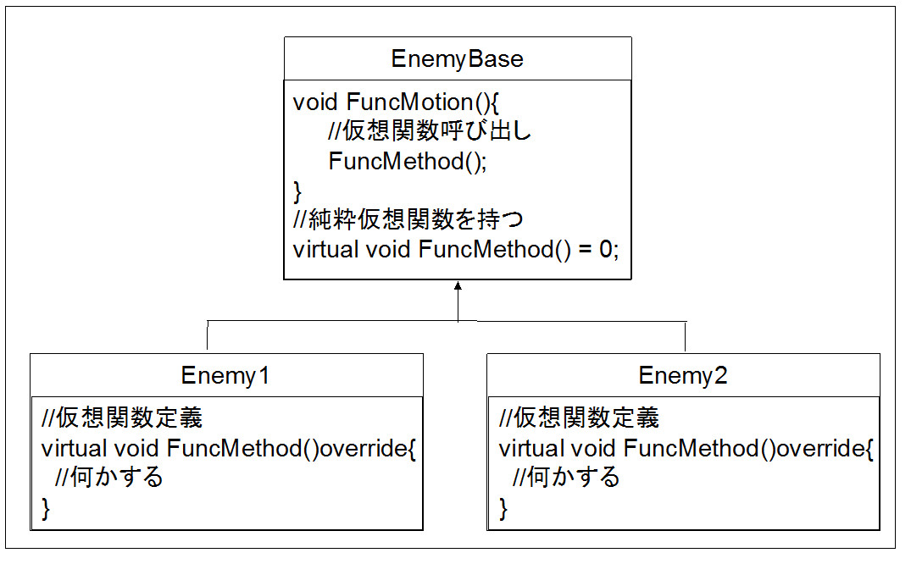
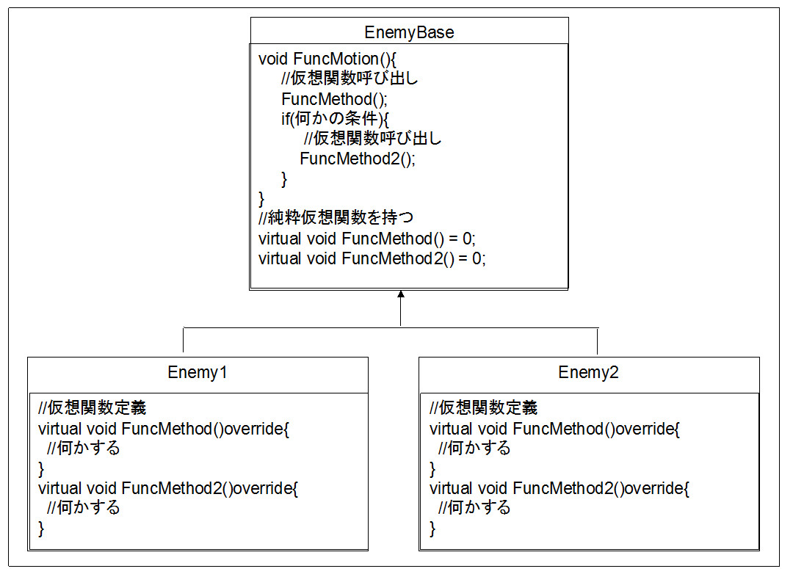
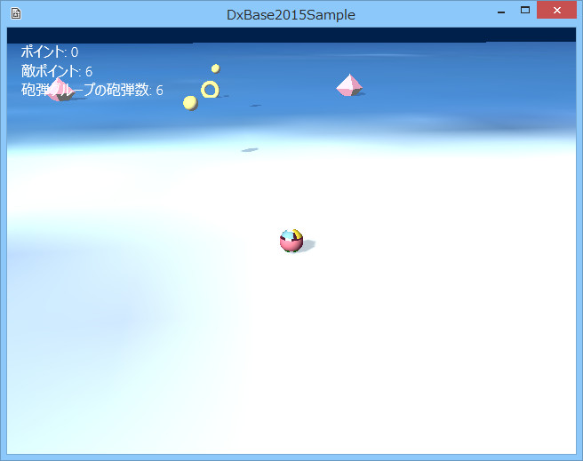

図5001a
外部から（たとえばステートから）、このオブジェクトのFuncMotion()関数を呼び出します。

図5001b
この構造では、親クラスが呼び出す仮想関数が2つ（以上）あります。つまり、どの仮想関数を呼び出すか、親クラス側に選択権が出てきます。もちろん、ここで仮想関数以外を呼び出しても問題はありません。

図5001c
サンプルの構造は、図5001aに近い形ですが、回転するトーラスと色が変わる正8面体が共通の親クラスを持ち、親クラスから仮想関数呼び出しを行ってます。
//--------------------------------------------------------------------------------------
// class Enemy : public GameObject;
// 用途: 敵キャラの親クラス
//--------------------------------------------------------------------------------------
class Enemy : public GameObject{
shared_ptr< StateMachine<Enemy> > m_StateMachine; //ステートマシーン
//中略
protected:
//中略
//派生クラスは、必ずこの仮想関数を実装する
virtual void ExtMotionMethod() = 0;
virtual void ShellHitMotionMethod() = 0;
public:
//中略
//この関数はメソッド呼び出し関数として実装する
void ExtMotion();
//砲弾と衝突した瞬間の処理
void ShellHitMotion();
//中略
};
//--------------------------------------------------------------------------------------
// class RollingTorus : public Enemy;
// 用途: 回転するトーラス
//--------------------------------------------------------------------------------------
class RollingTorus : public Enemy{
//中略
protected:
//派生クラスは、必ずこの仮想関数を実装する
virtual void ExtMotionMethod()override;
virtual void ShellHitMotionMethod()override;
public:
//中略
};
//派生クラスは、必ずこの仮想関数を実装する
void RollingTorus::ExtMotionMethod(){
float ElapsedTime = App::GetApp()->GetElapsedTime();
m_YRot += (m_RotationSpeed * ElapsedTime);
if (m_RotationSpeed > 0){
m_RotationSpeed -= 0.05f;
}
auto Ptr = GetComponent<Transform>();
Ptr->SetRotation(XM_PIDIV2, m_YRot, 0.0f);
}
//この関数はメソッド呼び出し関数として実装する
void Enemy::ExtMotion(){
//仮想関数呼び出し
//この呼び出しで派生クラスの仮想関数が実行される
ExtMotionMethod();
}
//砲弾と衝突した瞬間の処理
void Enemy::ShellHitMotion(){
//仮想関数呼び出し
//この呼び出しで派生クラスの仮想関数が実行される
ShellHitMotionMethod();
}
//ステート実行中に毎ターン呼ばれる関数
void EnemyDefaultState::Execute(const shared_ptr<Enemy>& Obj){
Obj->ExtMotion();
Obj->ShellThrowMotion();
}